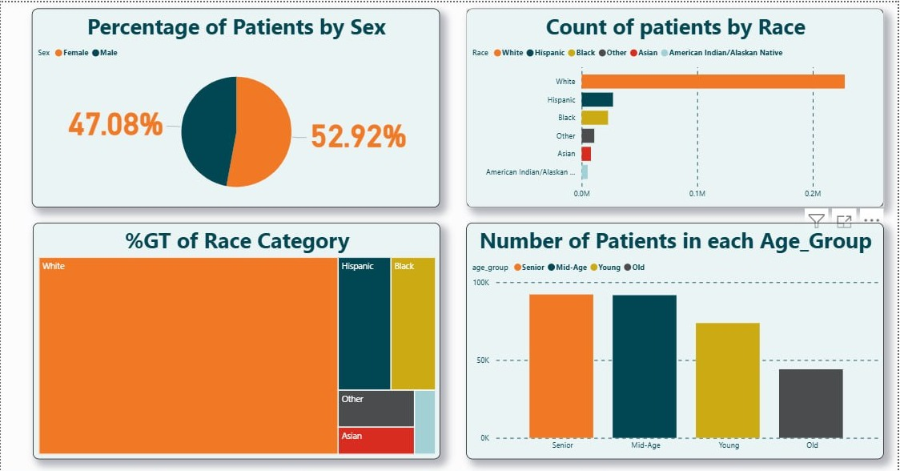
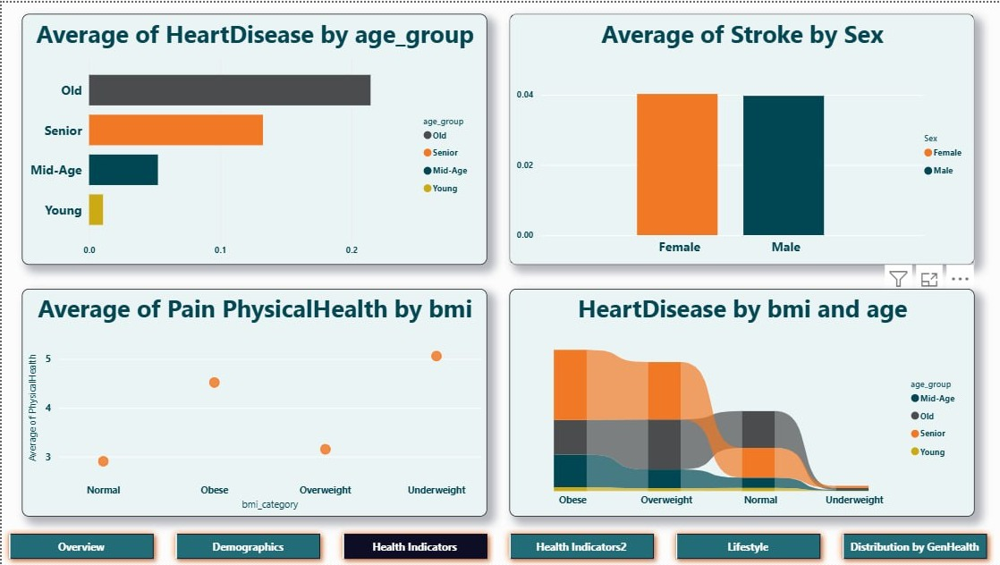

MethodX
AI-powered academic research platform · BreakIN Point Team
Business team member. Researched the target audience, defined user personas, and contributed to the business model and market sizing.
Open to remote roles
I'm Aya Emad Mohamed, a Computer Science student at Mansoura University and a DEPI data analysis graduate. I clean the data, query it, and build dashboards that non-technical people can read at a glance.
Selected work
DEPI capstone project. Team of four. We cleaned and processed 319K+ records and presented the results in an interactive Power BI dashboard with six report pages. Three of them are below.



AI-powered academic research platform · BreakIN Point Team
Business team member. Researched the target audience, defined user personas, and contributed to the business model and market sizing.
Startup concept · InnovEgypt Program
Team concept for a mobile app that helps people manage screen time. My part: the research and the final presentation.
Experience
Intensive data analysis programme by the MCIT
Faculty of Computers and Information, Mansoura University
Toolkit
SQL, Python, Pandas, NumPy, Excel, Google Sheets
Power BI dashboards and KPI reporting
Market research, user personas, critical thinking
Languages: Arabic (native) · English (B1, improving)
Looking for a remote role where I answer clearly, track the work and help close it.